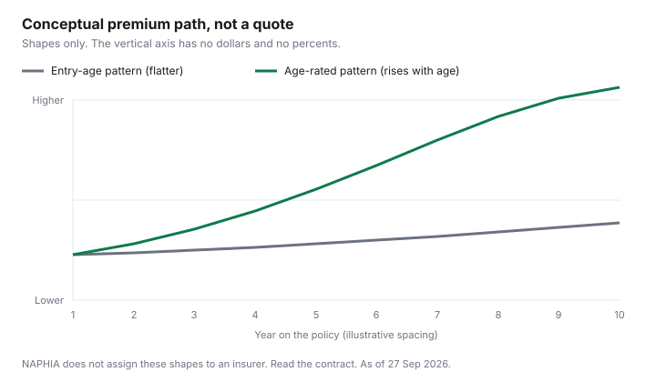

Pets · Canada
Why Pet Insurance Premiums Rise in Canada, and What to Do at Renewal

Pet insurance premiums in Canada rose across the industry in 2025: NAPHIA’s averages for accident-and-illness cover rose 9.9 percent for dogs, to $1,176, and 9.1 percent for cats, to $601. At renewal, compare the deductible, reimbursement and annual limit, which change what you pay at claim time. A renewal that jumps feels personal. The only national numbers this page will use are averages from the North American Pet Health Insurance Association’s 2026 highlights, which reflect the 2025 calendar year (PDF as of 27 Sep 2026). They explain the industry. They do not explain the letter with your pet’s name on it. Whether the product is worth keeping is the value framework. How the clauses work is the policy guide. This page is the decision at the notice: what moved, which levers change your share of the bill, and when a new quote recreates a pre-existing condition. It is not insurance advice, and it does not name a company to switch to.
Key takeaways
- Canadian accident-and-illness averages rose 9.9 percent for dogs, to $1,176, and 9.1 percent for cats, to $601, from 2024 to 2025. Accident-only averages fell. Embedded wellness rose faster.
- In-force premium in Canada was $660.5 million at year-end 2025, up 13.1 percent. Insured pets rose 3.9 percent. The average price grew faster than the headcount. That is not your claims history.
- The highlights have no premium by age and no sentence that a birthday adds a set percent. No insurer is quoted here for entry-age rules.
- Deductible, reimbursement, and annual limit change what you pay at claim time. No rate manual is listed here, so this page states direction only and tells you to read the quote.
- Switching replaces one pre-existing definition with another. The Pets Plus Us offer page treats conditions noted before enrollment, or during a waiting period, as not eligible. Keep the old policy until the new one is in force and the waits are explained.
Why premiums rise: age, vet cost inflation, claims experience and location
Start with what the report actually measured. Canada’s in-force gross written premium was $660.5 million at year-end 2025, up 13.1 percent, which the highlights call the lowest growth rate since the start of the pandemic.
The five-year average annual growth rate of that premium was 20.5 percent. Insured pets in force rose 3.9 percent in 2025, the smallest increase in the five years shown, and 48.8 percent over those five years. Premium grew faster than the number of insured pets. That is an industry statement about average price, not a finding that your household filed an expensive claim.
The product table does not move as one number. Accident-and-illness, the category the report describes as accident benefits plus illnesses such as cancer, infections, and digestive problems, averaged $1,176 for a dog and $601 for a cat in 2025, up 9.9 percent and 9.1 percent from 2024. The year before, those increases were 13.7 percent and 12.6 percent. In 2023 they were 15.6 percent and 14.3 percent. Accident-only fell in 2025, to $251 for dogs (down 6.9 percent) and $212 for cats (down 4.4 percent). Insurance with embedded wellness rose to $2,623 for dogs (12.6 percent) and $1,499 for cats (21.9 percent). If your notice says something else, the notice wins. The plan-type guide is what those three labels mean. This section is only the change in the average.
Age is the part the highlights do not quantify. There is no table of premiums by birthday and no sentence that names a percent increase at a given age. Vet-cost inflation is the reason the report gives, in the pets section, for premium growth outpacing the headcount: a consistent increase in average premium. It does not publish a Canadian veterinary inflation index beside the table. Claims experience in the highlights is a North American list of common conditions and of large paid claims whose printed locations are in the United States. Those dollar amounts are not Canadian invoices and are not used here. Location, in the member-only provincial table, is a share of insured pets and of premium, not a price index. Ontario was 36.2 percent of insured pets and 37.6 percent of premium. British Columbia was 23.1 percent and 25.5 percent. Alberta was 18.7 percent and 17.9 percent. Quebec was 13.2 percent and 11.6 percent. A larger share is not your renewal percent. If the notice blames your postal code, the evidence is that notice.
Age-rated vs entry-age pricing: what your policy says
Two contract patterns get confused because both use the word age. In an age-rated pattern, the premium is revisited because the animal is older at renewal.
In an entry-age pattern, age is an input when you enrol, and a later increase is tied to something else, such as the cost of veterinary care for animals with the same enrolment factors, not to the birthday by itself. The highlights do not say which pattern any Canadian insurer uses. A Trupanion page that discusses birthday pricing returned an access block on 27 Sep 2026, so this guide does not attribute either pattern to that company or to anyone else.
The practical test is on the page you can open. Find the sentence that says whether premium, coinsurance, or coverage changes because the pet ages, because you claimed, or because veterinary costs for a group of similar pets changed. Write down the notice period before an increase takes effect, if one is printed. The chart on this page draws the two patterns as shapes with no dollars on the axis, because a numbered forecast would invent a path the report does not print. Your declarations page is the numbered path. The household habit of reading an offer before it renews is the renewal guide. It was written for home and auto. The habit transfers: get the number in writing, and do not argue with an average when your page shows a different one.
At renewal: reading the notice and what changed
Read the notice as a diff, not as a bill you either accept or rage-quit. Line up last year’s annual premium, deductible, reimbursement percent, annual or per-condition limit, and the exclusions you already circled.
Then line up this year’s versions of the same five items. A higher premium with the same five items is a price change. A higher premium that also cut the limit or raised the deductible is two changes, and the second one can matter more on the day you claim. If a wellness rider appeared or disappeared, price it alone. The highlights do not give riders a Canadian average.
Ask what the notice claims as the cause, in its words: age, veterinary costs, your claims, a change in benefits, or location. If it does not say, ask the insurer in writing before the renewal date. The annual review checklist is the calendar habit for home and auto dates. Put the pet renewal on the same sheet, 45 days out if you can, so you are not deciding on the evening the old premium expires. A cat cost guide or the dog equivalent is the routine spending you will have either way. Do not cancel a policy because the routine total and the premium got added together in your head. They are different piles.
Levers you control: deductible, reimbursement %, annual limit
Three levers sit on most quotes. A higher deductible means you pay more of the first dollars of an eligible claim.
A lower reimbursement percent means you keep a larger share of every eligible dollar after the deductible. A lower annual limit means the contract stops sooner. In ordinary insurance arithmetic, each of those moves the premium down and your risk up. This page does not cite a rate manual, so it will not say that a particular change saves a particular percent. The quote is the only place that percent exists for your pet. Run the quote twice, write both annual premiums, and write what you would pay on a bill of the size your clinic’s estimate describes. The vet-bill guide is how to ask for that estimate in Ontario. The emergency fund is where the extra out-of-pocket has to live if you pull a lever.
Do not “save” by dropping a benefit you cannot replace. Moving from accident-and-illness to accident-only is not a deductible change. It removes the illness list, on NAPHIA’s own description of the two products. That can be a coherent choice. It is not a quiet tweak. Confirm the new product name in the insurer’s words before you compare the two premiums.
Switching insurers: the pre-existing-condition trap
A new quote applies a new definition to the file the clinic already has. The highlights do not print a look-back in months.
The Pets Plus Us Costco offer page, as of 27 Sep 2026, says medical conditions that are noted, symptomatic, or diagnosed prior to enrollment, or during a waiting period, are pre-existing and not eligible for reimbursement. That is one offer. Another wording may allow a symptom-free stretch. Both are “pre-existing” until you read the definition. Get the new definition, the new waits, and the new limit in writing, and keep the old policy until the new one is in force and the waits you care about have been explained. Cancelling first is how a covered condition becomes an excluded one for a stretch you did not budget.
After a denial, start with the insurer’s complaint path and keep the final position letter. The denied-claim guide is the household version of that file. It is not a way to rewrite a definition you already accepted. This page does not rank a destination insurer. A comparison referral, if you use one later, is an offer type under the disclosure, not a verdict.
Renewal decision checklist
Work top to bottom. Stop when a line fails.
If the product name changed, go back to the plan-type guide before you look at the premium. If a lever changed, fill the out-of-pocket column before you celebrate a lower price. If you are tempted to switch, write the pre-existing sentence from both contracts side by side. If the cash you would need at claim time is not in the fund, the cheaper premium has not made the household safer. The quote spreadsheet is where those columns can live for more than one offer.
| Change | Usual direction of the premium | Effect on what you pay when you claim | What to confirm in writing |
|---|---|---|---|
| Deductible up | Often down. The quote is the number. | You pay more before reimbursement starts. | Per-year or per-condition, and whether it resets. |
| Reimbursement percent down | Often down. The quote is the number. | You keep a larger share of every eligible dollar after the deductible. | Whether the percent applies to the vet’s invoice or to a fee schedule. |
| Annual limit down | Often down. The quote is the number. | The contract stops paying sooner. | Annual, per-condition, or lifetime, and what happens to a bill that crosses the cap. |
| Switch product, for example to accident-only | The averages are lower. Your quote may not match them. | Illnesses in the NAPHIA glossary leave the contract. | The product name, not the monthly price alone. |
| Switch insurer | Unknown until the new quote. No percent is printed here. | The new pre-existing definition and new waits apply to history you already have. | Both definitions, both waits, and that the old policy stays in force until the new one is. |

Sources
- NAPHIA, 2026 State of the Industry highlights, footer 21 Jun 2026, PDF as of 27 Sep 2026. Canadian premiums and 2024-to-2025 changes as cited. In-force premium $660.5 million, up 13.1 percent. Insured pets up 3.9 percent. Five-year premium growth 20.5 percent. Provincial shares are footnote 2, member data only. No age band, no city price, and no deductible or reimbursement rate table.
- Pets Plus Us Costco offer page and brochures page, as of 27 Sep 2026. Pre-existing sentence and “waiting periods may apply.” No day count. Not a ranking.
- Check Trupanion’s birthday-pricing and waiting-period pages directly. No rule is quoted from them. A household renewal percent of “20 percent or more” was not in the highlights and is not used.
Frequently asked questions
Why did my pet insurance go up?
The highlights do not explain your notice. They do show that Canadian accident-and-illness averages rose 9.9 percent for dogs and 9.1 percent for cats from 2024 to 2025, and that in-force premium grew 13.1 percent while insured pets grew 3.9 percent. There is no table of premiums by birthday. Your renewal can name age, vet costs, claims, or location. Read that page, not the national average.
Does pet insurance increase every year?
The Canadian table does not rise in every cell. Accident-only averages fell in 2025, by 6.9 percent for dogs and 4.4 percent for cats, while accident-and-illness and embedded wellness rose. Earlier accident-and-illness increases on the same table were larger. None of those rates is a promise that your premium moves on your birthday.
Can I lower my premium without switching?
The highlights do not publish a rate for a higher deductible, a lower reimbursement percent, or a lower annual limit. Those levers usually trade premium for more of the bill in your hands. The direction is a question for the quote. Confirm the new out-of-pocket on the same page as the new premium, and do not treat a forum’s percent as your saving.
Should I switch pet insurers?
You can ask for a new quote. The risk is the new pre-existing definition, the new waiting periods, and a gap if you cancel first. The Pets Plus Us offer page treats conditions noted, symptomatic, or diagnosed before enrollment or during a waiting period as not eligible. A lower number that excludes the condition you already claim is not a saving. This page does not name a company to switch to.
What is entry-age pricing?
Entry-age pricing, as a contract pattern, uses the pet’s age when you enrol and does not raise the premium only because the pet had a birthday. Age-rated pricing revisits age at renewal. The NAPHIA highlights do not say which pattern a Canadian insurer uses, and no insurer page on birthday pricing is cited here. The sentence that answers the question is in your wording or your renewal notice.
Researched and drafted with AI assistance and fact-checked against official Canadian sources. How we create content.
Disclosure: Pet insurance quote and comparison referral types are an offer type. Saving Optimizer may earn a commission if we later add a partner link. We do not currently claim a partnership with any insurer, broker, or comparison site. We do not rank plans and we do not name a best policy. Education only, not insurance advice. The wording you are offered is the contract.